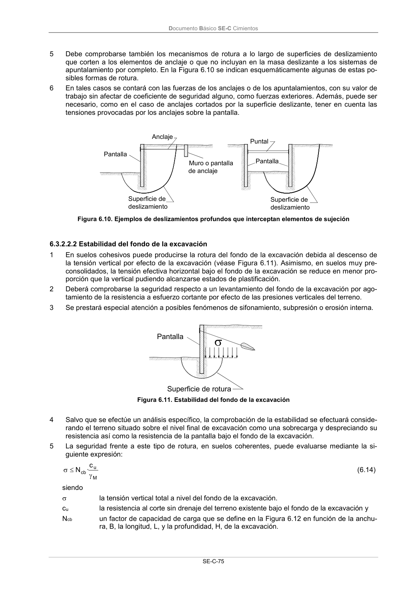

DB-SE-C Cimientos · edición 2019-12-20 · capa oficial
Documento DB-SE-C-oficial · SHA-256 del PDF a71133f4b0dca253e45ea3071c70f2a512354bcc5cd841bf89b1a502f567ac5e
Página física 80 de 165.
Copia fiel del PDF fuente · Fuente oficial
Ficha de la disposición en la fuente oficial
Formato: Texto de la página (Markdown)
Documento Básico SE-C Cimientos
SE-C-75
5
Debe comprobarse también los mecanismos de rotura a lo largo de superficies de deslizamiento
que corten a los elementos de anclaje o que no incluyan en la masa deslizante a los sistemas de
apuntalamiento por completo. En la Figura 6.10 se indican esquemáticamente algunas de estas po-
sibles formas de rotura.
6
En tales casos se contará con las fuerzas de los anclajes o de los apuntalamientos, con su valor de
trabajo sin afectar de coeficiente de seguridad alguno, como fuerzas exteriores. Además, puede ser
necesario, como en el caso de anclajes cortados por la superficie deslizante, tener en cuenta las
tensiones provocadas por los anclajes sobre la pantalla.
Pantalla
Anclaje
Muro o pantalla
de anclaje
Superficie de
deslizamiento
Puntal
Pantalla
Superficie de
deslizamiento
Figura 6.10. Ejemplos de deslizamientos profundos que interceptan elementos de sujeción
6.3.2.2.2 Estabilidad del fondo de la excavación
1
En suelos cohesivos puede producirse la rotura del fondo de la excavación debida al descenso de
la tensión vertical por efecto de la excavación (véase Figura 6.11). Asimismo, en suelos muy pre-
consolidados, la tensión efectiva horizontal bajo el fondo de la excavación se reduce en menor pro-
porción que la vertical pudiendo alcanzarse estados de plastificación.
2
Deberá comprobarse la seguridad respecto a un levantamiento del fondo de la excavación por ago-
tamiento de la resistencia a esfuerzo cortante por efecto de las presiones verticales del terreno.
3
Se prestará especial atención a posibles fenómenos de sifonamiento, subpresión o erosión interna.
Pantalla
Superficie de rotura
Figura 6.11. Estabilidad del fondo de la excavación
4
Salvo que se efectúe un análisis específico, la comprobación de la estabilidad se efectuará conside-
rando el terreno situado sobre el nivel final de excavación como una sobrecarga y despreciando su
resistencia así como la resistencia de la pantalla bajo el fondo de la excavación.
5
La seguridad frente a este tipo de rotura, en suelos coherentes, puede evaluarse mediante la si-
guiente expresión:
M
u
cb
c
·
N
(6.14)
siendo
la tensión vertical total a nivel del fondo de la excavación.
cu
la resistencia al corte sin drenaje del terreno existente bajo el fondo de la excavación y
Ncb
un factor de capacidad de carga que se define en la Figura 6.12 en función de la anchu-
ra, B, la longitud, L, y la profundidad, H, de la excavación.
